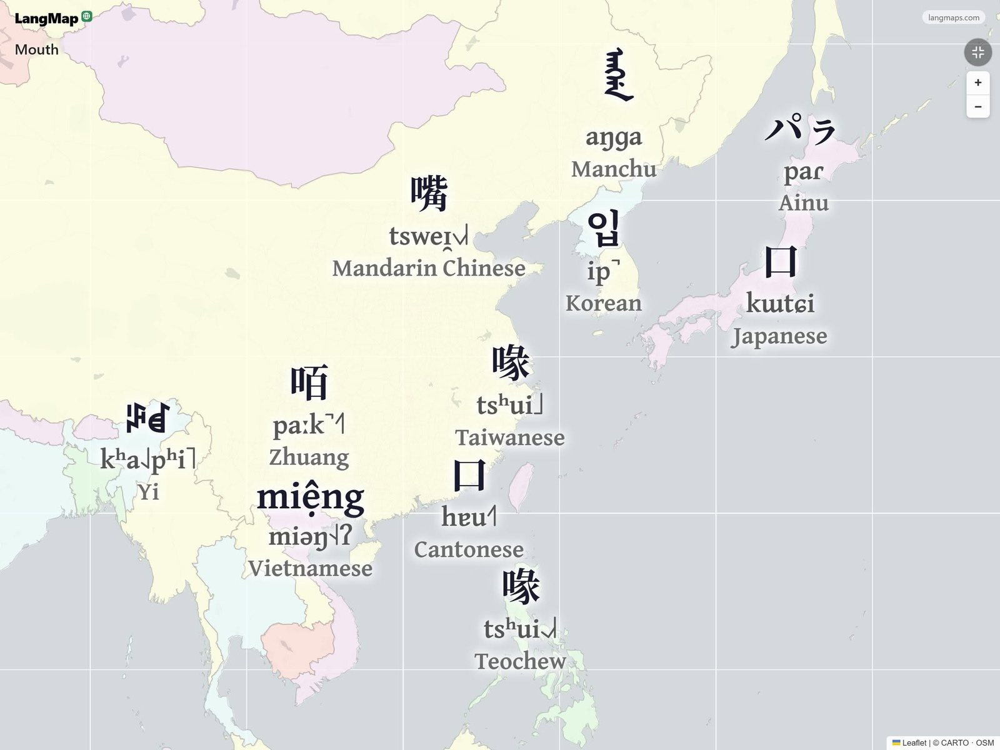

Sinosphere · · revised · Facebook post
口, 嘴, 喙: When a Beak Becomes a Mouth
- The character 口 looks like the obvious way to write "mouth."
- But across Chinese varieties, it is actually only one of several everyday choices.
- Two of the most common alternatives, 嘴 and 喙, both have old associations with a beak or snout.

Contents
Three characters for one mouth
Line up the Chinese varieties on this map and they split in an interesting way.
Mandarin and Jin: 嘴
Cantonese: 口
Southern, Eastern and Northern Min: 喙
Japanese sides with Cantonese in keeping 口 (kuchi) as the ordinary word for "mouth."
The split runs deeper than three labels. On the map, Wu, Gan and Hakka also use 嘴, from Shanghai and Suzhou to Hakka in mainland China and Taiwan. Hokkien from Xiamen to Zhangzhou and Quanzhou, Teochew, Hainanese and Puxian all use 喙; Taiwanese says 喙 (tshuì).
Even Yue is not uniform. Standard Cantonese says 口 (hau2), but the map's Taishanese, Zhongshan, Dongguan and Nanning rows all have 嘴.
Outside Chinese, Korean 입 (ip) and Vietnamese miệng are native words, not borrowings of any of the three characters.
Two beaks
What makes this especially interesting is the history of the other two characters.
嘴 originally referred to a bird's beak before becoming the ordinary word for a human mouth in Mandarin.
喙 likewise had the sense of a beak or pointed animal mouth, although it was already being used for the human mouth in Classical Chinese. Today it remains the normal everyday word in several Min varieties.
So across a large part of the Chinese-speaking world, the everyday word for a human mouth is written with a character that once had a strong "beak" association.
口 never disappeared
Meanwhile, 口 never disappeared.
It is the oldest of the three. Baxter–Sagart reconstruct its Old Chinese form as *kʰˤ(r)oʔ, and it is the form the map gives for Old Chinese.
It remains common in compounds, classifiers and other meanings, even where 嘴 or 喙 became the ordinary spoken word for the body part. A Mandarin speaker who says 嘴 for the mouth still counts family members with 口 and walks through an 出口, an exit.
A cheek becomes a mouth
And this kind of replacement is not unique to East Asia.
Latin normally used ōs for "mouth."
But French bouche and Spanish boca do not descend from ōs.
They come from Latin bucca, originally "cheek," which gradually took over the meaning "mouth" in spoken Latin.
Even very basic body-part words are not always as stable as we expect.
Sometimes the simplest character loses the job
Sometimes a cheek becomes a mouth.
Sometimes a beak becomes a mouth.
And sometimes the simplest character, 口, is the one that loses the everyday job.